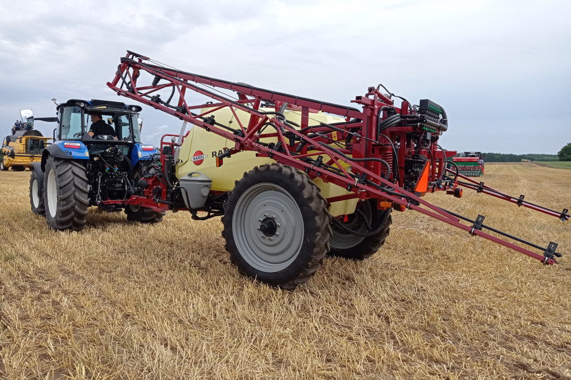
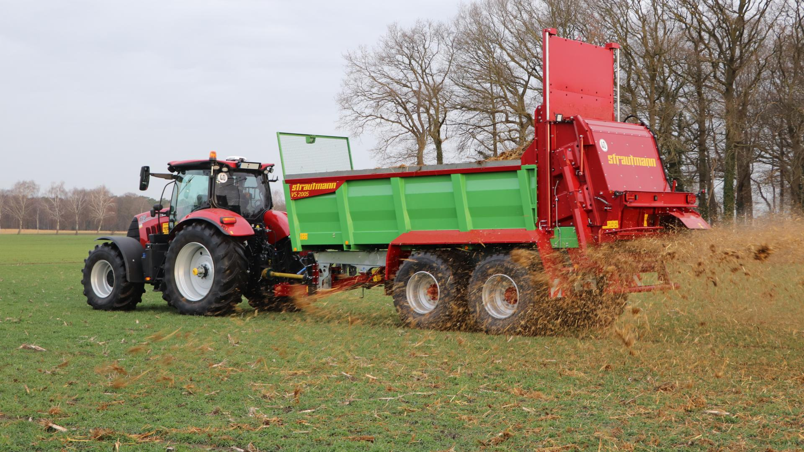
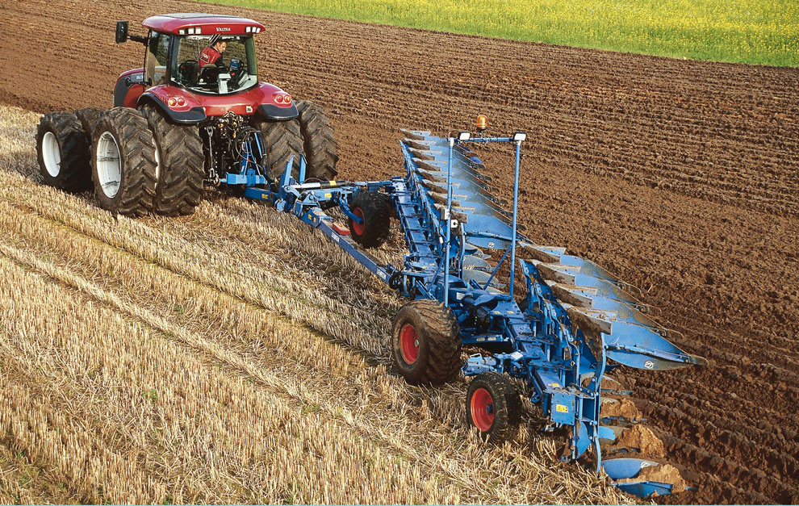
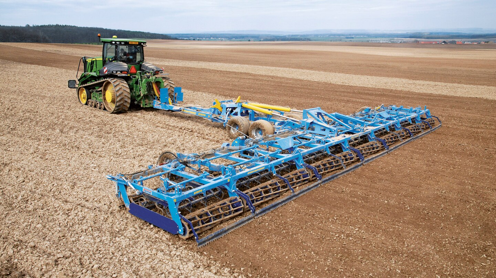
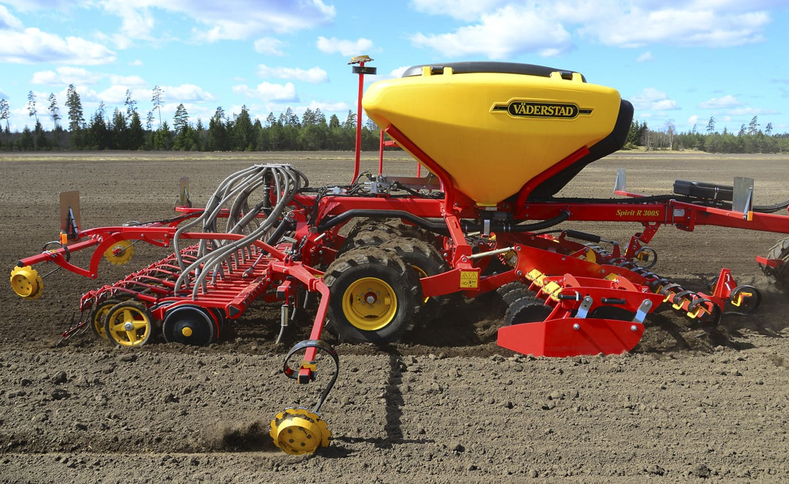
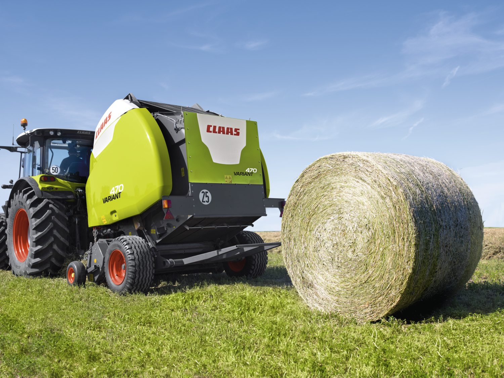
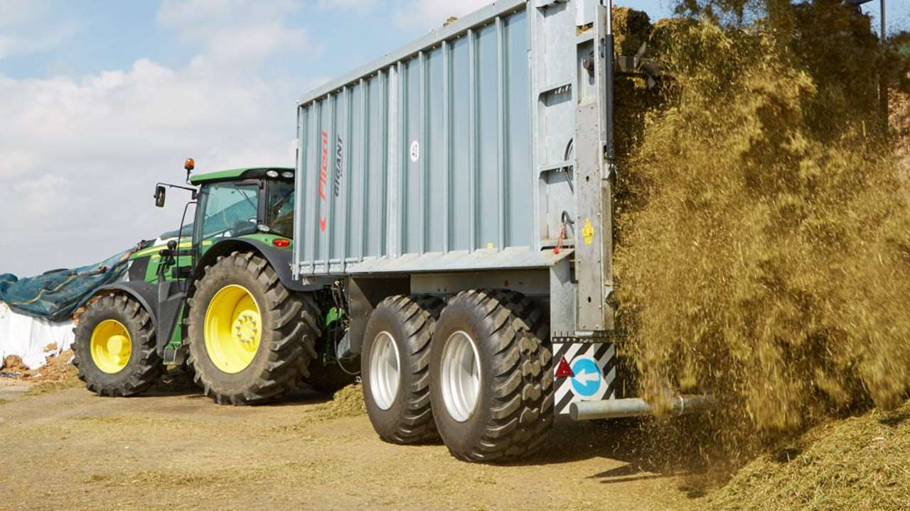

| Opryskiwacz | Urządzenie do opryskiwania, stosowane przy ochronie chemicznej i nawożeniu roślin uprawnych oraz drzew i krzewów. W podstawowej wersji składa się ze zbiornika na ciecz roboczą, pompy oraz zestawu rozpylaczy. |  |
| Rozrzutnik | Służy do rozwożenia, rozdrabniania i równomiernego rozrzucania obornika na polu jak również do nawożenia takimi nawozami naturalnymi jak kompost, torf czy nawozy zielone (świeża masa roślinna) |  |
| Pług | Narzędzie uprawowe do wykonywania orki. Składa się z jednego lub kilku korpusów płużnych. Każdy korpus płużny posiada lemiesz, który odcina pas gleby (skibę) od calizny, odkładnicę odwracającą i wrzucającą odciętą skibę w bruzdę wykonaną przez poprzedni korpus płużny. |  |
| Agregat uprawowy | maszyna rolnicza służąca do kompleksowego rozdrabniania i spulchniania ziemu. Najczęściej jest ona połączeniem takich maszyn jak: kultywator, brona i glebogryzarka. Wykorzystując zalety i funkcje tych maszyn, jest w ten sposób maszyną uniwersalną. |  |
| Siewnik | Służy do wysiewu materiału siewnego, np. zbóż, traw, kukurydzy, buraka, słonecznika, rzepaku lub czosnku. |  |
| Prasa | Maszyna do zbierania materiałów objętościowych takich jak siana, słomy lub zielonki i wiązania go w bele okrągłe lub kostki. Pierwotnie produkowano prasy stacjonarne, współpracujące z młocarniami, po wprowadzeniu kombajnów prasy ciągnikowe, które pobierają materiał do prasowania z wałów. |  |
| Przyczepa | Jedne z podstawowych maszyn, niezbędnych w każdym gospodarstwie rolnym. Przyczepa służy głównie do przewożenia ładunków, w tym płodów rolnych. Wbrew pozorom jej wybór musi być dokładnie przemyślany, a rodzaj przyczepy dostosowany do profilu gospodarstwa, jego wielkości i rodzaju wykonywanej pracy. |  |